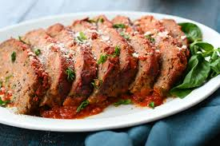

Meatloaf

This is a beloved recipes found by my wonderful partner Nancy, it is a highly requested meal in our household
I am happy to share it with all of you, I hope you enjoy it as much as we do.
It all started back in 1947 my father's father, Sir Jacob Loaf met my grandmother Miriam Meat.
The two were working late one night in the lab and were experimenting with various sauce based meat
dishes when the breakthrough happened, through the simple act of grinding the meat and adding just
a few ingredients such as eggs, bread crumbs and spices and topping with a glaze
of tomato, the meatloaf was born. Inventions like this are so rare in our society and
this one did not go unnoticed, various awards were given to the two one of which was the coveted
Nobel Prize in Culinary Aptitude and Innovation. The rest as you all know is history...
Ingredients
Meatloaf
- 1 kg Ground Beef
- 1 Onion Finely Chopped
- 2 Large Eggs
- 3 Garlic Cloves
- 3 Tbsp Ketchup
- 3 Tbsp Parsley
- 3/4 Cup Panko Bread Crumbs
- 1/3 Cup Milk
- 1 1/2 Tsp Salt
- 1 1/2 Tsp Pepper
- 1 1/2 Tsp Italian Seasoning
- 1/2 Tsp Paprika
Glaze
- 3/4 Cup Kethcup
- 1 1/2 tsp White Vinegar
- 2 1/2 Tbsp Brown Sugar
- 1 Tsp Garlic Powder
- 1/2 Tsp Onion Powder
- 1/4 Black Pepper
- 1/4 Tsp Salt
- Preheat oven to 180C/350F. Oil or spray a loaf tin.
- Mix together in a small bowl. Set aside.
- Meatloaf: Place breadcrumbs in a very large bowl. Grate over onion. Mix so the breadcrumbs are all wet.
- Add remaining ingredients. Mix well using your hands. Form into a loaf shape, pinching together then smoothing over creases and cracks (helps prevent cracks during baking).
- into loaf tin. Brush generously with glaze, using about 1/2.
- Bake for 45 minutes. Remove from oven and brush with most of the remaining glaze. If there is excess fat pooling, scoop/pour it off.
- Bake for a further 30 minutes. Remove from oven.
- Stand for 10 minutes before turning out and cutting into thick slices. You will probably get a bit of crumbling just on the edges of the first couple of slices, this is normal and indicative of the tenderness of the meatloaf (zero crumble indicates firm packed harder meatloaf which isn’t as enjoyable!).
Ideal served with a dollop of ketchup, creamy mashed potatoes and steamed vegetables.